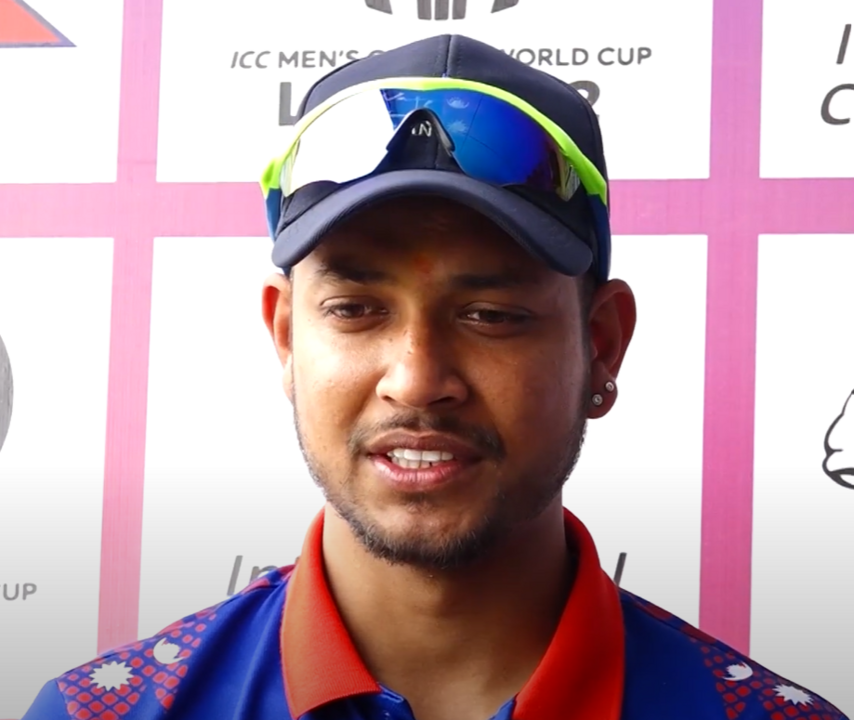

Welcome to Manish's Website
Sandeep Lamichhane is a talented leg-spin bowler from Nepal. Born in 2000, he quickly rose to fame playing for Nepal’s national team. He became the first Nepalese player in the Indian Premier League (IPL). He holds two world records for becoming the fastest bowler to take 100 wickets in T20 and ODI formats. His skill shines in international matches and various T20 leagues worldwide.
Off the field, Sandeep is also known for his passion for music. Though he faced serious legal challenges, his conviction was overturned. He remains a key figure in Nepalese cricket, inspiring many young players. His journey reflects talent, resilience, and determination to succeed.
My Favourite Things
- Travelling
- Playing Cricket and Football
- Singing and Listening Songs
Haiku
Practice every day
Chase dreams like runs on the pitch
Greatness will follow